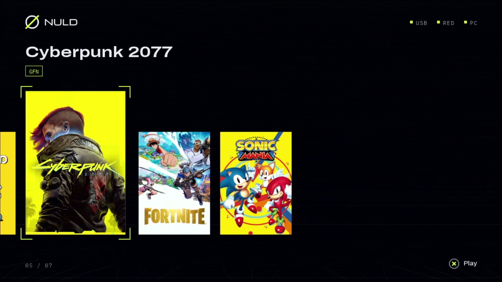

Your PC and cloud games, on a PlayStation 2.
The game runs on your PC, or in the cloud through it. The PS2 is the screen and the controller: 1280×720 at 30 frames per second, with sound, 70 to 100 ms behind the PC's own screen.

What it does
The numbers were measured on a slim PS2 (SCPH-75001) over component at 720p, with the TV in game mode.
| 01 | 720p at 30 frames per second | Decoded by the PS2's own video chip in 8 to 19 ms a picture, with nuld-av: a video format made for this console. |
| 02 | 70 to 100 ms of delay | From the PC's screen to the TV, measured with a stopwatch on both. Every picture is shown as soon as it is decoded: there is no buffer. |
| 03 | Your games in the PS2's menu | The PC's installed Epic Games and Steam games and your GeForce NOW library, with their covers. Pick one on the PS2 and it starts on the PC. |
| 04 | The PS2 controller | Read 60 times a second and handed to the PC as an Xbox 360 controller, sticks and triggers included. |
| 05 | Sound | What Windows plays, in step with the picture. |
| 06 | The desktop too | The first card of the menu shows the PC's screen as it is: an emulator, a browser, anything. |
| 07 | A network path of its own | The stream is taken straight from the PS2's Ethernet driver: 2.5 MB/s where the console's network stack gives 1.5. |
| 08 | It finds its way back | If the capture stops (a game taking the screen, a Windows prompt) it starts again; if the PC goes away, the PS2 returns to its menu. |
Screens
Recorded from the PS2's video output at 1280×720. Select one to see it full size.Download
One zip: a folder for the PS2's USB stick and a folder for the PC.
| NULD Link zip | link.elf and its config.ini for the PS2; the server, start.bat and the written steps for the PC | |
| all releases | Release notes | |
| nuld-av | The video library underneath, MIT: 720p video with sound for any PS2 project | |
| NULD | Optional: the game launcher for the PS2 that lists Link under APPS |
Four steps
You need a PS2 that runs homebrew (FreeMcBoot or similar) with a network port, a TV that takes 720p from it, and a Windows PC on the same network. The manual has the rest.
- Copy the zip's
PS2folder contents to a FAT32 USB stick and put your PC's address innuld/config.ini. - On the PC, once: Python, ffmpeg, the ViGEmBus controller driver, and
install-packages.bat. - On the PC, run
start.batand allow it through the firewall. - On the PS2, run
APPS/Link/link.elf, pick a game and press ✕.